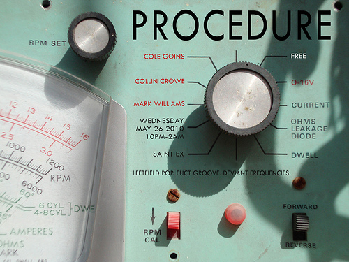
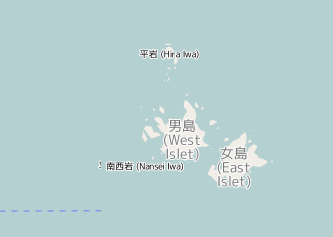

Scripting GIS with LUA
Hiroshi Miura @miurahr
OpenStreetMap Foundation Japan
Problem
GIS configurations
沢山の測地系
多量の地物の種類
多種類のデータソース
多種類のデータ形式
複雑なロジック
地図表現の多様性
Vector/raster
組み合わせ問題
OpenStreetMapの地図スタイル指定
既定の指定ファイル： ＞6400 行のXML
理由：
道＆国道＆ズームが１６から１７＆トンネルではない＆橋ではない →赤＆幅１０ピクセル 道＆剣道＆ズームが１５＆トンネル＆橋ではない →褐色 多数つづく
組み合わせ爆発
CSSが提唱される
CartoCSS
CSSによる指定で、基本設定＋応用設定＋個別設定のように積み重ねるようなスタイル指定を実現
同等の指定ファイル： > 4000行のCSS
OSMデータのDBインポート
osm2pgsql
元データのうち、処理対象としたい地物をフィルターしてDBスキーマにインポート
組み合わせ爆発
なにか良い方法は？
プログラム的に設定を表現できないか
フィルターとして言語を組み込み
処理内容を「Procedural」に記述
やりたい方法（HOW)を直感的に記述

Lua
Lua
- "Lua" (pronounced LOO-ah) means "Moon" in Portuguese
Lua
lua.org
Scripting language born in Brazil in 1992
Combines simple procedural syntax with powerful data description
Dynamic variable type
Register-based virtual machine
Automatic memory management
Why Lua
Lua is a proven, robust language
Lua is fast
Lua is portable
Lua is embeddable
Lua is powerful
Lua is small
Lua is free
Lua loves Games
LUA example
print("Hello World")
OSM2PgSqlとLUA(1)
style.luaによりインポートのフィルター指定
例
- 重なり方向の優先度数値の計算
OSM2PgSqlとLUA(2)
function add_z_order(keyvalues)
z_order = 0
if (keyvalues["layer"] ~= nil ) then
z_order = 10*keyvalues["layer"]
end
zordering_tags = {{ 'railway', nil, 5, 1},
{ 'boundary', 'administrative', 0, 1},
.....
OSM2PgSqlとLUA(3)
続き
for i,k in ipairs(zordering_tags) do -- イテレーション
if ((k[2]
and keyvalues[k[1]] == k[2]) -- Key合致
or (k[2] == nil
and keyvalues[k[1]] ~= nil)) then -- Key/Value合致
if (k[4] == 1) then
roads = 1
end
z_order = z_order + k[3] -- 重み付け
end
Another Use Case

Another Use Case

Another Use Case
Build Tile serving service - TileMan
11/2 AM 講演でご紹介
Credit
I borrowed some example and ideas from @agentzh, James Hurst @pintsized.
Photo: Filter Forge - flickr.com/photos/filterforge/9134251006
This presentation is written by Markdown2Impress.
introduction to Lua